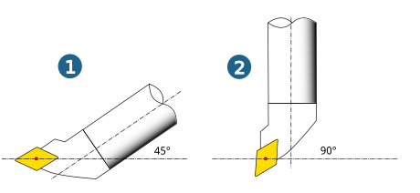
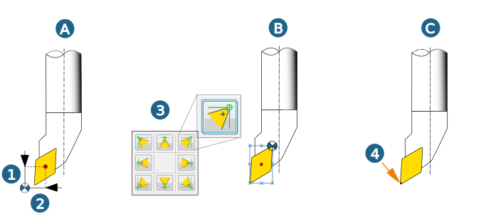
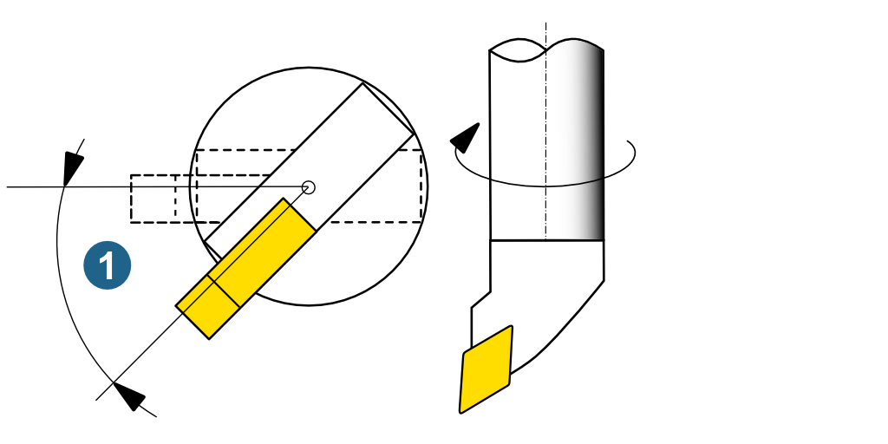

Cutting point setup (turning tools)
Specify the setup of the tool and the position of the cutting edge using the following parameters: Tool angle, Tool reference, Cutting edge position and Reference angle.
The parameters are saved in one parameter set. It is possible to name, copy and paste a parameter set. You can create as many parameter sets as desired for a tool.
Parameter sets
|
|
|
||
|
|
|
|


Name the Cutting point.
Tool angle: Specify depending on the type of machining. Inside (1), outside (2). Default setting = 90°.
|  |
Tool reference: Specify the tool reference for calculation of the toolpath.
Free point definition (A): Define any reference point. To do this, use the parameters Mounting point x offset (1) and Mounting point z offset (2).
Orthogonal gauge point (B): Select the Cutting edge position parameter using the buttons (3) for machining operations with path compensation (G41/G42). Defines the location of the reference point relative to the Mounting point (center point) of the insert.
Primary center (C): The radius of the insert is used as a reference point (4).
|  |
Correction list: Correction space in the machine.
Invert tool: Function not enabled (1), function enabled (2).
Advanced
Reference angle (1): Turn the tool holder and insert around the own axis in the tool angle (overhead setup). No graphical preview available.
|  |